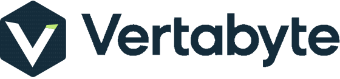
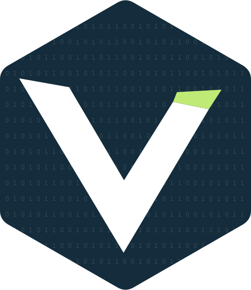
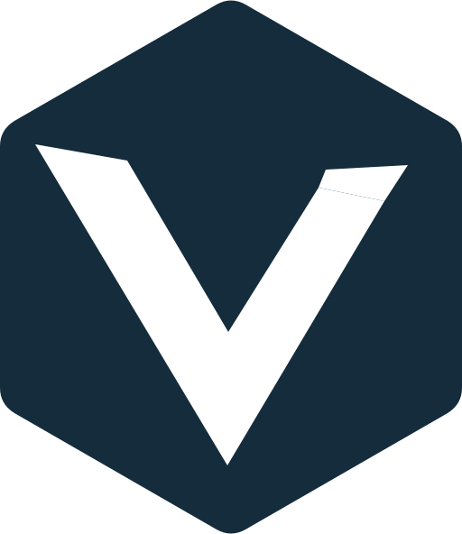

PRECISION IN EVERY DETAIL
Practical technology.
Distinctive by design.
A navy hexagon, a clear V and one green accent.
The binary detail rewards a closer look.
01 / THE LOGO
One identity. Two levels of detail.


Use the textured mark at larger sizes.
Use one colour where colour reproduction
is limited. Keep the green tip in full colour.
02 / COLOUR
Navy leads. Green accents.
#142C3BRGB 20 · 44 · 59#BFEA75RGB 191 · 234 · 117#FFFFFFRGB 255 · 255 · 255Use navy text on green, and white text on navy.
Green is an accent, not body text on a white background.
03 / TYPOGRAPHY
Clear, familiar and readable.
Website stack: Arial, Helvetica, sans-serif.
Body copy: 16px or larger. Use clear hierarchy, generous
line spacing and sentence case.
Use the supplied SVG. Do not recreate it by typing the company name in Arial or substituting another font.
04 / SPACE & SCALE
Give the mark room.
Clear space: at least ¼ of the emblem’s width on every side. This margin is “x”.
Use the dedicated plain favicon at tiny sizes.
Check the result in the intended medium before printing.
05 / THE HIDDEN DETAIL
A byte-sized reference.
01010110Eight bits representing uppercase V in ASCII.
Repeated in orderly rows behind the V.
The white V stays clear and uninterrupted.
Binary is confined to the navy emblem at 23% white opacity. Use the detailed version only when the emblem is at least 96px wide (25mm in print).
For navigation, favicons and small documents, use the plain mark. Avoid extending the pattern across body copy or entire pages.
06 / CONSISTENT USE
Keep the geometry intact.
- Use: supplied proportions, palette and original wordmark.
- Avoid: stretching, rotation, glow, shadows or recolouring.
- Keep: the green accent on the right V tip only.
- Name: Vertabyte. Legal name: Vertabyte Tech Limited.
Working files: public/brand/ contains SVG and transparent PNG variants. brand/source/ contains editable vector masters. Use SVG for websites and scalable artwork; PNG for applications that require raster images.